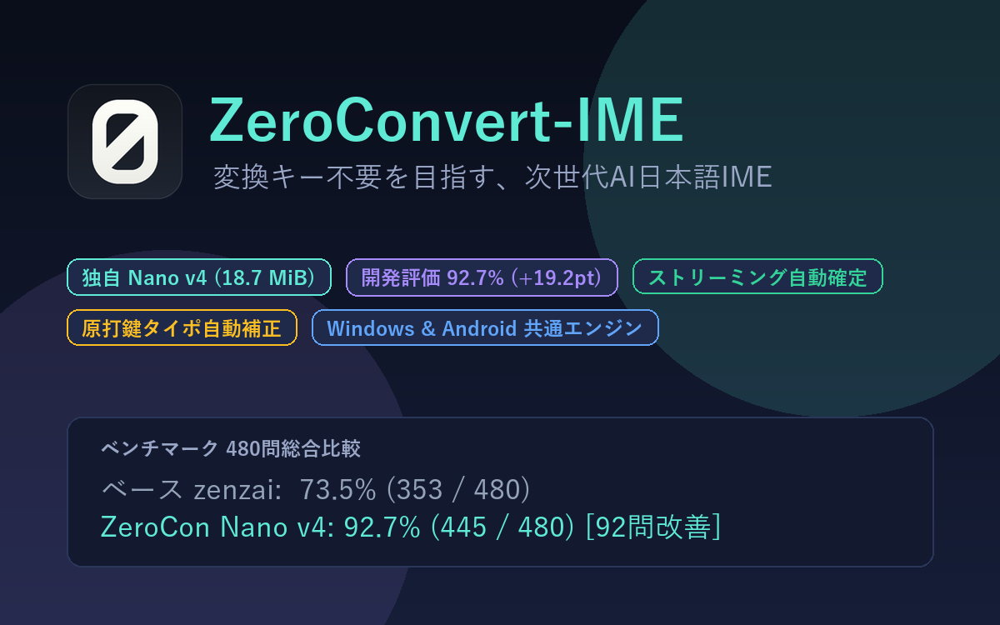

ZeroConvert-IME
変換キー操作をゼロに近づける次世代AI日本語IME。独自開発の極小モデル「ZeroCon Model Nano v4（18.7 MiB）」を搭載し、長文の自動確定・タイポ補正（正解率78%/実質86.7%）・先読みアシストに対応（Windows / Android）。
Next-generation AI Japanese IME aiming for zero conversion keypresses. Powered by the custom 'ZeroCon Model Nano v4 (18.7 MiB)' with streaming auto-commit, 78% accuracy typo correction, and predictive assist (Windows / Android).